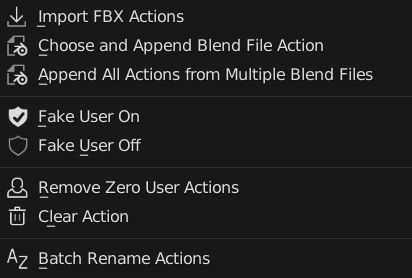
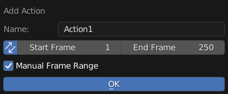
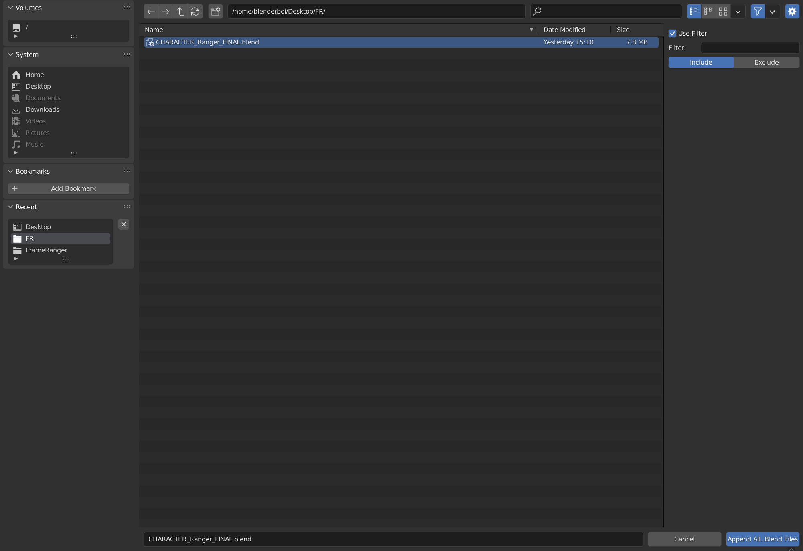
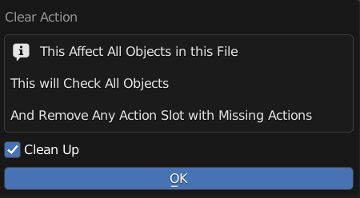
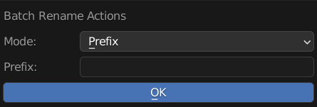

Menu Operators
Operators to Manage Action Bin
Add New Action
Add New Empty Action to this Object
Name: New Action Name
Sync: Also Update Scene Frame Range Live
Manual Frame Range: Use Manual Frame Range
Manual Frame Range = True
Start: Start Frame
End: End Frame
Use Fake User: New Action Will Use Fake User
Import And Load FBX Actions
A Wrapper Operator for Import FBX, Also Have Options to Use BetterFBX for Importing if is installed
It Will Import the FBX and Remove All the Imported Items except Actions
Note
Action Bin Version Does Not Load the Action to Object
Use File Name as Action Name: Imported Action Will Use Its own File name, Useful for importing in Mixamo Animation
FBX Importer: Import Method
Build In: Uses Build in FBX importer
BetterFBX: Uses BetterFBX if Better FBX is Installed.
Import Settings: These is the Same as either import fbx settings or betterfbx settings.
Warning
This Operator Will Remove Orphan Data, Make Sure all wanted data are not orphan data
Choose and Append Blend File Action
Pick and Choose Action from One Blend File to Append From and Append to this Blend File
After Choosing a blend file, a pop up similar to Action Loader will appear, You can Pick and Choose which action to append by clicking on the action
Search Filter Also works like Action Loader
Note
Action Bin Version Does Not Load the Action to Object
Append All Actions From Multiple Blend Files
Append All or Filtered Actions From Multiple Blend Files to this Blend File
Note
Action Bin Version Does Not Load the Action to Object
Use Filter: Enable Filter
Use Filter: Filter Appended Action
Include / Exclude: Filter Method
Include: Check if Action Name Include Filter String
Exclude: Check if Action Name Exclude Filter String
Remove Zero User Actions
Remove Actions with No Users
Fake User On
Turn On All Fake User of Actions in this blend file
Fake User Off
Turn Off All Fake User of Actions in this blend file
Clear Action
Clear All Action in this Blend File
Clean Up: Remove Missing Action Slot from All Objects
Batch Rename Actions
Batch Rename All the Action in List, Adding Prefix, Suffix, or Find and Replace
Mode: Method of Rename
Prefix: Prepend String A to the Start of the Name
Suffix: Append String A to the End of the Name
Replace: Find String A and Replace with String Batch
Remove: Remove String A from Name
String A (Prefix / Suffix / Find): Use for Prefix, Suffix, Find and Remove
String B (Replace): Stirng to be Replaced